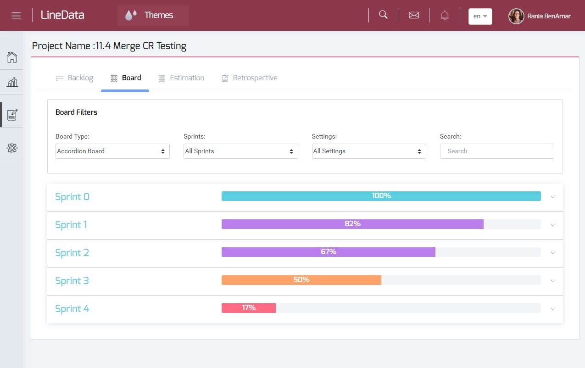

Project Management
This page is showen when we click on Go to project
In this part, you will see three parts that each project taken:
Project | Backlog | Board
Project part
Backlog part
View your project backlog
The backlog of each project is grouped by phase (DEV | QA | BA ...) and in every one of them there are tasks related to every phase.

Add a task to your backlog
Add new task if you want with different information and in witch sprint you want to add it .
You have the possibility to delete and edit task.
Board part
The created tasks are added in the first lane of the board (for example : todo) and takes the status Todo
If you want to change the place of the task you simply drag it to the next lane.
Then the color will be changed also.
SCRUM board
Contains more then one sprint

CR board
Contains only a sprint